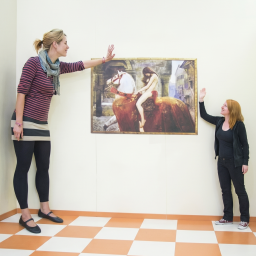

Atenção de Ponta a Ponta
✏ Entrada
Matrizes Q, K e V — edite os valores para explorar
Passo 1
Q e K — matrizes de consulta e chave
Passo 2
Softmax por linha → S — pesos de atenção (cada linha soma 1)
Cada linha de S
soma exatamente 1 — é uma distribuição de probabilidade que diz o quanto cada patch "presta atenção" a cada outro.
Passo 3
A = S · V — embeddings contextuais dos patches
Clique em uma célula de A ou em uma linha de S para ver a soma ponderada dos values.
Cada linha de A é o embedding contextual do patch: uma mistura ponderada de todos os values. Diferente das convoluções, a atenção não tem restrição de localidade — qualquer patch pode atender a qualquer outro, independente da distância na imagem. Clique num patch marcado (●) abaixo para ver um exemplo hipotético.
